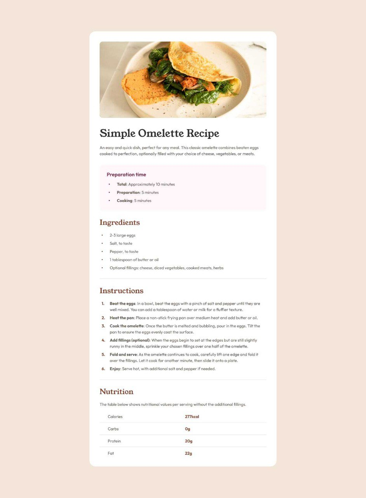

Oh I am very very happy that you have arrived here.
Thank you in advance.
I want to tell you about some of my simple and light projects
because I am still in the beginning of my life
and have not advanced to do big projects,
but in the future you will see that, trust me.
- The first project was the design of a program to reserve seats for the flight
- The second project was asked by Minu for a restaurant
- And the third project was in my beginnings HTML web Login
I will explain to you what this system is in general and how it works
This program enters a number of numbers according to what appears to you on the screen and you choose to show you all the seats and appear to
you and after you appear you see the empty seats and seats
reserved and choose the number if you enter a seized number
with the error gives you that the number is reserved and so you can reserve as
you want seats when It ends appears that the reservation is over.
I will put the file for you because I did not finish my studies at the university in order
to put a link to you to say that,
but it is a very beautiful program and I won it with the best flying program

Download File
I think I shouldn't explain to you what is the menu. This is a simple light project.
I will put you a picture of the menu

I was in my beginnings, you know and created a simple page Hahaha.
This is a video, I was registered for a day.
I remember the beginnings and how you are now .
Thanks to God.